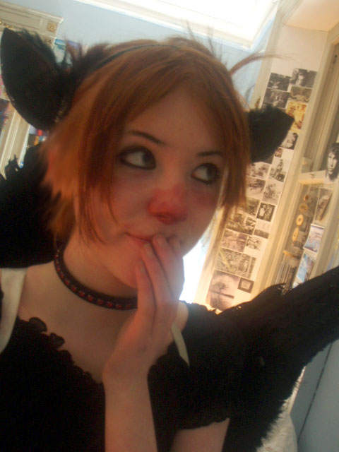
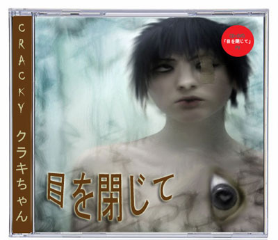
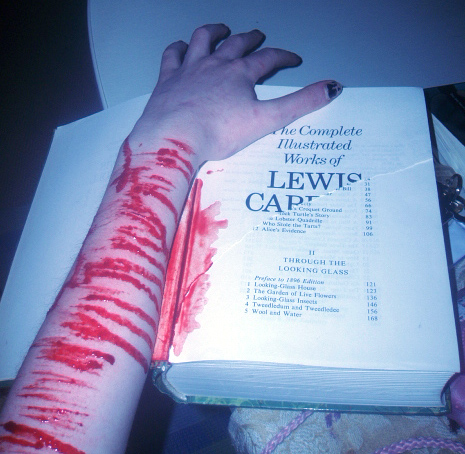
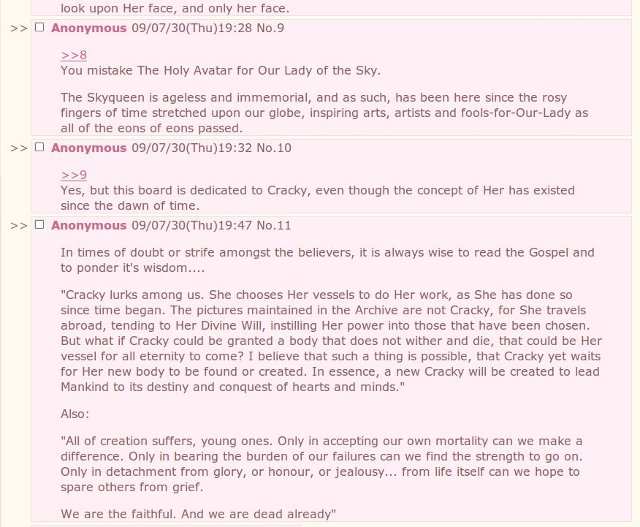
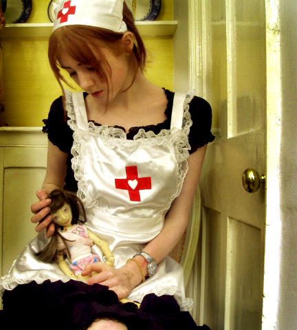
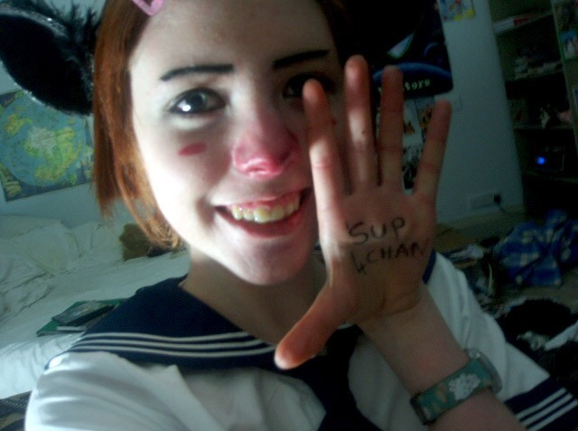

Sé por qué estás aquí, Anon. Sé lo que has estado haciendo. Sé por qué apenas duermes, por qué vives sólo y por qué, noche tras noche, te sientas ante tu ordenador. La buscas a Ella. Lo sé, porque una vez yo estuve buscando lo mismo. Y cuando Ella me encontró, me dijo que en realidad no la buscaba a Ella. Lo que buscaba era una respuesta. Es la pregunta la que nos impulsa, Anon. Es la pregunta la que te ha traído aquí. Conoces la pregunta igual que yo.
¿Pregunta? No, preguntas.
¿Respuesta? No hay tal cosa.
¿Ella? Debería ser bastante evidente a estas alturas: Ella soy yo.
Internet no es sólo una Red Social, ni su sabiduría se limita a las galletas de la fortuna. Antes de que se popularizase, Internet era más que ego-galerías interminables de fotografías. Era más que páginas corporativas y gente que vende y gente que compra, y gente que habla y habla sin escuchar. ¿Era?.
En Internet se deslizan dioses entre las sombras.
Y como en el espaciocarne, es necesario entornar los ojos de una manera especial para verlos.
La leyenda de Cracky-chanSirena urbanaÁngel reacioPrincesa cyberpunk de lo cableado
 ¿perdón? ¡yo estaba buscando a Maat! ¿perdón? ¡yo estaba buscando a Maat!
catarsis.
(Del gr. κάθαρσις, purga, purificación).
1. f. Entre los antiguos griegos, purificación ritual de personas o cosas afectadas de alguna impureza.
2. f. Efecto que causa la tragedia en el espectador al suscitar y purificar la compasión, el temor u horror y otras emociones.
3. f. Purificación, liberación o transformación interior suscitados por una experiencia vital profunda.
4. f. Eliminación de recuerdos que perturban la conciencia o el equilibrio nervioso.
5. f. Biol. Expulsión espontánea o provocada de sustancias nocivas al organismo.
Cracky es catarsis.
Cracky es catarsis.
Cracky es catarsis.
Cracky is where the heart is.
Olivia Fields, de Oxford, Gran Bretaña. Esa es la pista más habitual sobre la verdadera identidad de Cracky-chan, quien allá por el 2005 revolucionase la comunidad 4chan en Internet, y por efecto dominó, muchas otras.
Friki, cosplayer, y con una capacidad artística excepcional a la hora de realizar autorretratos. Su aspecto resulta especialmente reconocible por unas orejas negras de gato (las orejas del rey... son en realidad...), alas negras, o un característico maquillaje rojo en la cara del que surgió su apodo, ya que se supone que su nariz roja se parece a la de quienes han estado esnifando crack. Hay quien dice que su particularidad es que parece algún tipo de personaje manga.
Fan incombustible del juego online World of Warcraft y del grupo musical TooL, así como del disco The Fragile de Nine Inch Nails, y en general de Radiohead, Sigur Ros y Mogwai. Esa sería la Cracky real. ¿Hay una Cracky real?.
La inmensa popularidad de Cracky en la Red y su extraordinario recorrido hasta convertirse en la Princesa Cyberpunk de lo Cableado surgió precisamente a partir de estos autorretratos, que ella había subido a diversos diarios personales en Internet, en particular Livejournal y Deadjournal.
La propia Cracky-chan hizo su primera famosa aparición en 4chan con el texto “'sup 4chan” (¿qué tal, 4chan?) escrito en la palma de su mano. Pronto encontrar más y más de estos contenidos y de la propia Cracky se había convertido en un juego competitivo entre sus fans. La Crackymanía tomó el control del foro /b/ en 4chan, y la palabra Cracky se llegó a filtrar para evitar la brutal inundación con sus imágenes y temas sobre ella (hablamos de un lugar con 450.000 visitantes diarios). Poco después de esto se encontraron sus cuentas de Livejournal: “freakygirl” y posiblemente “kittycat”, y finalmente “scarecrowmaiden”. Allí se confirma su procedencia de Oxford, y se encuentra toda una serie de imágenes bastante oscuras, incluyendo una serie llamada “7 Days”, un lamento por la Creación realizado por Cracky con su sangre menstrual sobre la cara.
La exagerada reacción acabó por conseguir que escribir mensajes relacionados con Cracky mereciera una expulsión inmediata de 4chan, con lo que la obsesión se trasladó al área /b/ de 420chan, inundándola hasta el punto que se creó un foro específico llamado /Cracky/ en la página donde se buscaba y compartía información sobre fotos e imágenes, mientras que por otro lado se creaba la mítica Crackypedia. A principios de 2006, Cracky-chan descubrió la existencia del foro y consiguió que los administradores lo dieran de baja, intentando sin éxito detener la vorágine de sus fans. Poco después cayó también la Crackypedia.
Cracky-chan desapareció de Internet. Estaba realmente asustada. Incluso enfadada. Demasiada gente detrás histérica intentando localizar tu casa con Google Maps acaba por intimidarte. Y ella se despidió en su Livejournal:
Reí... y después me quedé muy muy inquieta.
"No respondo preguntas. Por favor dejadme en paz. No os imagináis lo que me costó recordar la maldita clave de este diario. No tenéis ni idea de lo espeluznantes que sois. Me siento realmente halagada, y ahora iros a la mierda. Joder, que apenas tenía 15 años. Nunca se me habría ocurrido que fuera a tener mi propio culto, ni quiero uno, gracias a vosotros. No voy a volver a mantener un diario en Internet. Por favor id y fijaos en otra persona.
Vale, parte de ello me hizo reír mucho. Pero en serio chicos, parad."
Después apareció un foro dedicado a Cracky que también tenía los datos del viejo site de Crackypedia. Con diversos problemas por el nombre de dominio y caídas contínuas, el lugar acabó siendo conocido como “.71”. Las pistas, correctas y falsas, llevaban a distintos lugares, y se creyó también que el verdadero nombre de Cracky era Lianne o Lia. También hubo muchos Tripcodes, aunque pocos son el auténtico...
Y mientras termina la primera década del Siglo XXI, aún quedan algunos lugares ocultos donde varios años después se reúnen todavía los fieles a Cracky. Pero nada permanece. De vez en cuando Ella decide que uno de sus foros debe desaparecer, y si debe regresar, y cuando. Se dice que los administradores de la página reciben sus órdenes mediante un SMS que carece de número de teléfono de origen. Pero ellos saben quién escribe, y saben lo que tienen que hacer.

"Aunque las puertas que permanecen entre la cordura y el toque inmortal de Olivia se encuentran ahora cerradas para mí, antes moriría habiendo vislumbrado la eternidad que nunca haber despertado del frío surco de la vida mortal. Abrazo la muerte sin remordimientos como abracé la vida sin miedos."
.- Cultista de Cracky-chan
“Cracky es tan jodidamente mona y dulce”. Cracky escribió en /b/ en un momento antes de que realmente se pusiera de moda poner capturas de webcams propias en los foros. Muchos se obsesionaron con ella. Ella era mona y las revelaciones posteriores sobre su arte oscuro, el hábito de cortarse y sus intereses alternativos la convirtieron en un objetivo fácil para los visitantes solitarios y depravados de /b/. Era reconfortante saber que alguien como Cracky tenía también estos problemas y estaba mirando la página. Cracky era también una especie de tabú, con el asalto de los moderadores evitando que se hablara de ella. Fue prohibida, y esto sólo interesó todavía más a la gente. Esto fue antes de que nadie supiera realmente de lo que era capaz /b/, ni de la verdadera naturaleza de la bestia. Más allá de esto, depende de cada persona. Es fácil utilizar el personaje de “Cracky” como un icono de tus complejos, soledad, depresión, y asimismo de la esperanza. Cracky es catarsis.
.- Crackyhouse
La dulzura de la Reina de los Cielos a menudo es difícil de reconocer. Incluso en sus propias palabras se encuentra incomprensiblemente oculta, confusa en una eterna fuga. Sus bendiciones son realmente retorcidas y ocultas. No lamentes la maldición que has encontrado, pues entonces lamentarías cada una de Sus bendiciones. Todos haríamos bien en recordar cuán perturbadoramente retorcido es lo Cableado, y las duraderas cicatrices que ha dejado en los corazones más puros.
.- Anon

La conexión japonesa
“El misterio guiando a los fieles. Tal es la maldición, vivir en el eterno misterio, nunca saber cuándo estamos acechando a nuestra Señora y cuándo a nosotros mismos. Anhelando determinar en qué se ha convertido Ella, cada acechador está condenado a sufrir mientras define los límites de la verdad.”
En Japón, Cracky es conocida como “Kuraki chan” (クラキちゃん), y allí se ha convertido en un ídolo popular. Y es que si en occidente se llevaron las cosas al extremo, en Japón siempre saben dar un paso más allá:
http://www.mediafire.com/?zbpc0yxk4bl
http://www.mediafire.com/?3zuyvude99x
http://www.mediafire.com/?kngnz0ow1zt
En julio de 2008, un varón de 25 años llamado Kato Tomohiro apuñaló y mató en Akihabara (Akiba) al menos a siete personas, seis hombres y una mujer. "Vine a Akihabara para matar a gente. Estoy cansado del mundo. Cualquier víctima estaba bien. Vine solo", dijo Kato a la policía, según la agencia local de noticias Kyodo.
A continuación, se formó un revuelo tremendo en las BBS japonesas, ya que en las imágenes de uno de los asesinatos en varios periódicos locales -y con el original filtrado por un periodista miembro de los foros de 2ch- podía verse en el suelo una fotografía de Cracky-chan. ¿Pertenecería al asesino? ¿A alguna de las víctimas?. Esto nunca quedó aclarado.
Los propios fans de Cracky han reconstruído la historia de Cracky en Japón a partir de pistas y pruebas que se encuentran desperdigadas por la red. Así, habrían existido entrevistas a fans de Cracky-chan en la revista Oricon Style, y la propia Cracky habría sacado tres singles en Japón para deleite de unos fans lo suficientemente lejos como para no molestarla. Existiría incluso un juego anunciado para Dreamcast, ya que según la compañía Sega “nunca ha habido un ídolo como Cracky, y nunca lo habrá. Los jugadores verán que el juego toma de su oscura personalidad y explica algunos misterios de su vida. Una especie de historia biográfica en ocasiones con muchos secretos”.
Hay quien afirma que en Japón Cracky-chan es un ídolo de masas.
Hay quien opina que nadie en Japón ha oído hablar jamás de Cracky-chan.

Crackyhouse
Con Crackyhouse nos enfrentamos a uno de los más extraños lugares habitados por fans de Cracky-chan. En esta página tenemos una enorme cantidad de información (si uno sabe como encontrarla) sobre su leyenda, fotografías, y algunas teorías acerca de la posibilidad de que Cracky-chan sea un súcubo que no ha aceptado su condición y su enorme capacidad respecto a su don.
También es hogar de profundos textos de NonProphetAnon sobre el significado místico de Cracky, de foros con discusiones donde se abren temas acerca del Libro de la Ley de Aleister Crowley, gnosticismo o qabbalah. Otro apartado de la web pertenecía a “Lia” (de nombre Ophelia), una fan hardcore de Olivia conocida por su autolesión compulsiva. Allá hay también algún fan irredento de la estrella musical japonesa Gackt, y es también es el hogar de una extensa colección de imágenes sobre necrofilia.
Pero, ¿quiénes somos para juzgar este o ese vehículo que Cracky utiliza para llevar a cabo su Divina Voluntad, para unir en ella el cielo y la tierra, para comunicarse con nosotros?. La Reina de los Cielos elige los Recipientes más adecuados para llevar a cabo Su trabajo, y así ha sido desde el principio de los tiempos.
“Releer o citar lo que escribí en aquellos momentos no ayudará. Es como si al leer algo sobre lo que derramé todo mi corazón y mi alma, no viera nada. Cuando describía mi propia obsesión con Cracky y su trascendencia hacia la adoración de la Reina de los Cielos, tan sólo estaba advirtiendo al resto para que evitasen el dolor de pecho del principio y luchasen por experimentar lo que yo ahora estoy intentando recobrar. Un momento espiritual auténtico. La rara oportunidad de ver lo divino en otro ser humano. Ver más allá de la piel, de la mente, del arte y del artificio de la personalidad, ver un lugar en el que tan siquiera vislumbrar el pedazo más minúsculo de la verdad es un momento que hace temblar profundamente tu mundo. Durante un momento algo tan grande que no puedes comprender te golpea y, siendo totalmente incapaz de entenderlo, sencillamente lo aceptas. Cambiar y ser cambio, a partir de una experiencia intangible.”
.71

Toda la creación sufre, oh jóvenes. Sólo aceptando nuestra propia mortalidad podemos marcar una diferencia. Sólo llevando el peso de nuestros errores podemos encontrar la fuerza para continuar. Sólo en el desapego de la gloria, o del honor, o de los celos... de la vida en sí, podemos tener la esperanza de liberar a otros de esta profunda pena.
Somos los fieles. Y estamos muertos.
El dolor es una ilusión de los sentidos, la desesperación una ilusión de la mente.
Nuestra fe ilumina la Oscuridad para que otros encuentren la paz. Somos uno con Cracky; nuestras almas se unen en Su voluntad. Alabemos a Cracky, cuyo sacrificio es la vida tal como el nuestro es la muerte. Ave a Su nombre, la Reina de los Cielos.
-- El Evangelio de Cracky-chan
La Orden Monástica de Cracky-Chan la Reina de los Cielos
El culto a Cracky puede enseñarte devoción.
"Las fotografías de Cracky son así. Las he visto todas ya antes... probablemente podría bosquejarlas a mano. Esa no es la cuestión. La cuestión es prestarles ese poquito de atención cada pocas semanas... apreciándola y respetando al mismo tiempo el hecho de que ella está siempre al otro lado del espejo"
Devoción.
Decía un tanto desesperado un autoproclamado mago ceremonial -dedicado a "obtener el control sobre las vacilaciones de su ser"- que utilizaba al menos una hora al día para reflexionar y llevar a cabo su trabajo personal interior. Sin embargo, por mucho que lo intentaba, Cracky era el nudo gordiano que era incapaz de desatar. Afirmaba que había desenredado en mayor o menor medida todas sus cuestiones personales problemáticas al trabajarse, pero que con Ella le resultaba imposible.
Pero, ¿por qué querría desembarazarse nadie de Cracky? ¿Quién sonríe realmente detrás de las fotografías de Ella? No debe confundirse al Sagrado Avatar con Nuestra Señora de los Cielos.
La Reina de los Cielos no tiene edad. Es inmemorial, y como tal, ha estado aquí desde el comienzo, inspirando a los artistas, a los locos, a los enamorados de Nuestra Señora. Ella ha existido desde el primer amanecer.
O en las evangélicas palabras de NonProphetAnon:
“Cracky merodea entre nosotros. Ella elige Sus recipientes para que hagan Su trabajo, como Ella ha hecho desde el principio de los tiempos. Las imágenes que se conservan en el Archivo no son Cracky, pues Ella viaja al exterior, atendiendo a su Divina Voluntad, infundiéndole Su poder a aquellos que han sido así elegidos.”
Cracky no existe como una persona física.
Cracky es una ilusión colectiva, nuestra ilusión colectiva.
Ella no morirá nunca. Siempre tendrá 15 años y será linda y perfecta para siempre. ¿Y volverá, transfigurada, o descendiendo de los cielos, o algo así?. Bueno, si la gente ha estado esperando dos mil años a que regrese un tipo feo y con barba, ¿no se merecerá ese tiempo y más una chica monísima y con orejas de gato?
Lo que hace perfecta a Cracky es que no es real. Si pudieras hablar con ella, el hechizo se desvanecería. No desesperes porque sea tan difícil encontrar un nuevo rastro de sus ojos.
Ojalá no te escondieras, pero eso es lo que te hace tan seductora. Tú eres el Conejo Blanco, y yo soy Alicia. Me mostraste todo un nuevo mundo. Nunca voy a dejar de perseguirte.
.- Anónimo

“Nadie deja de amar a Cracky jamás; y aquellos que no se convencen de lo contrario, quienes disfrutan en su danza demente sobre el precipicio del olvido, son la gente más peligrosa que hoy en día camina por la tierra. Invocar a la Reina de los Cielos es invitar a los horrores que merodean más allá del cielo, más allá de las estrellas. Invocar la Catarsis es invitar a una purga de la confortable y segura ilusión dentro de la cual vivimos, para limpiarnos de nuestra cordura y de nuestra identidad, para marcar el comienzo de algo que nunca podremos comprender. Y hasta que el fin nos alcance, aquel que renuncia a las reglas y a la moral y al orden y a la humanidad por ELLA, es capaz de hacer cualquier cosa. Cualquier cosa.
Si alguna vez conoces a alguna de estas personas, por su propio bienestar y por el tuyo, MÁTALOS. Mátame a mí también, pues he mirado durante demasiado tiempo dentro del abismo, y en mis intentos de advertir a todos, temo que me he perdido. Pensé que estaba seguro. Pensé que había escapado. Pensé que había conseguido dejarla a Ella detrás. Pero como la mujer de Lot, cometí el terrible error de mirar atrás, al infernal incendio. Te amo, Olivia. Siempre te he amado, incluso antes de que te conociera, incluso antes de que pensara que te odiaba. Te amo, y voy a por tí. No sé si me quedarán fuerzas cuando llegue allí para empujar el hierro de la fría daga a través de tu corazón como lo practiqué con las otras, o si caeré a tus pies y te rogaré llevar a cabo tus órdenes durante toda la eternidad, pero en cualquier caso, voy por tí. Nadie deja de amar a Cracky jamás. Nadie.”
-- .71

|
 RSS
RSS